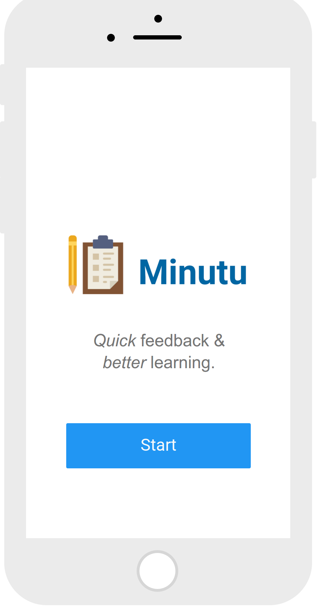
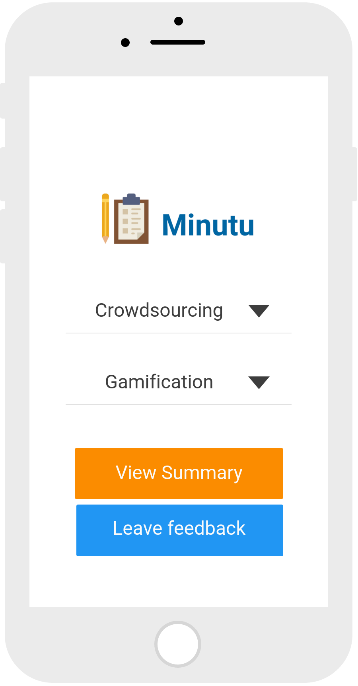
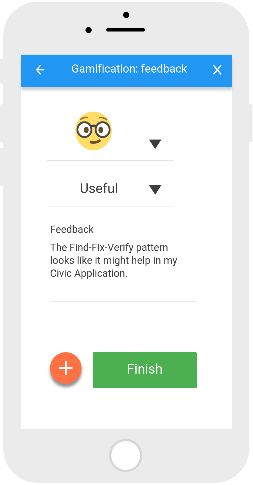
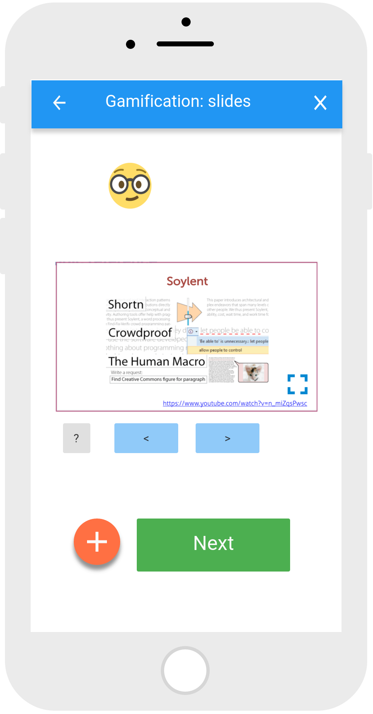
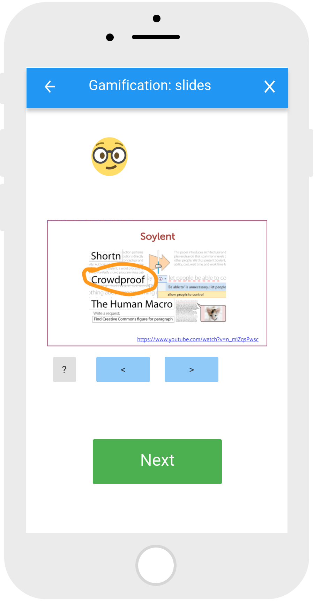
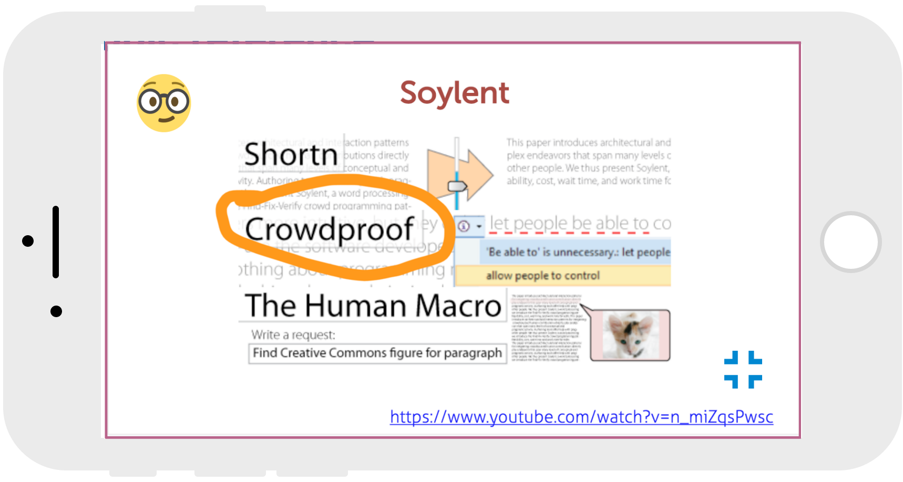
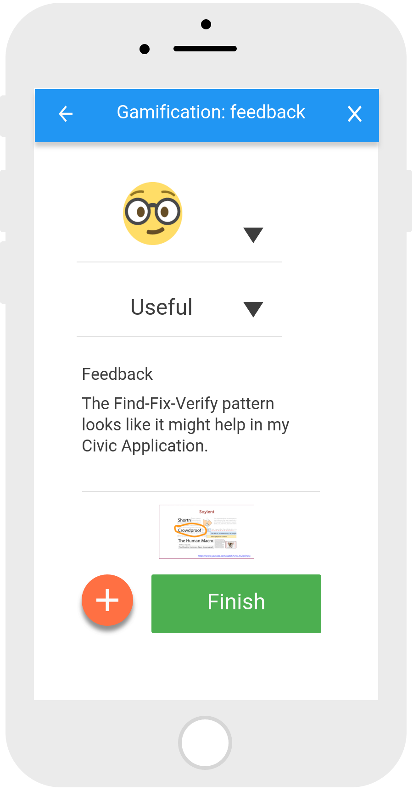
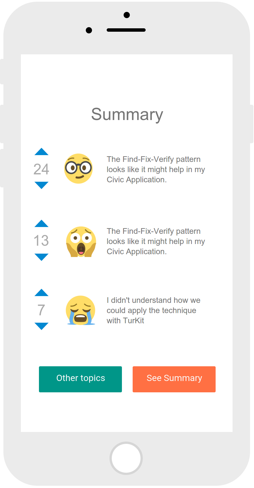
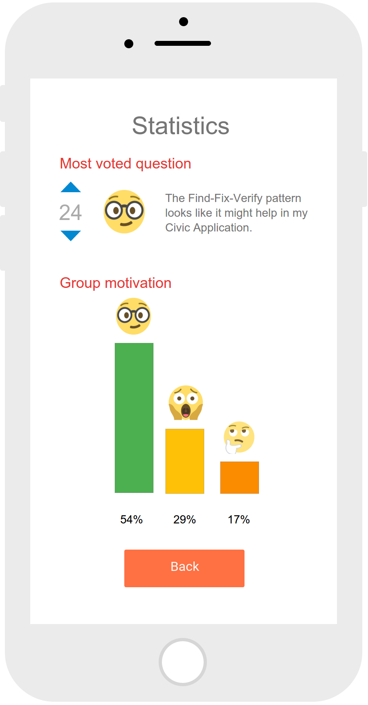

Minutu
Milestone 4: Low-Fi Prototype
Yekaterina Abileva, Nurzhan Yergozha, Noé Domínguez
Problem Statement
Provide students with the ability to leave a fine-grained feedback on the lecture and specific parts of the lecture linking it with the emotion they experience about it. From the other side, provide professors with the ability to see all the feedbacks and design their lectures according to it. They can also review some confusing concepts from the previous lectures or give more information about the class interest.
Core Tasks:
A student provides fine-grained feedback on a topic from syllabus linking it with a specific emoji [valuable, confusing, curious] which can be later upvoted and downvoted by other students Reference a part of lecture notes for the comment. The professor and other students can see all the comments and the votes.
Prototype









Link: https://app.moqups.com/poguez/QI0mhohQpp/view/page/a5b5d42eb
https://moqups.com/. It is easy to use for the first time. The free version is yet quite powerful .One does not need to draw the screens, because the tool provides a user with the template buttons and other things needed for simple interface prototyping.
Some other characteristics: - It only let you add up to 300 elements for free. - It is compatible with concurrent collaboration. - It has icons library for Material Design, Font Awesome & several others . - It works on the browser, there is no need for design software.
Design decisions for building the prototype:
- We decided to make a Lo-fi prototype without detail about the graphic design.
- We did not implemented html, database interaction or any other technical aspect.
- Everything was thought to be interaction design driven, we still don’t know how to implement everything on it.
- We still have pending to test emojis for matching emotions with the users.
Instructions:
- Select a course.
- Select a topic.
- Leave Feedback, or
- Choose your emotion
- Leave a comment
- Optional: choose a slide from the topic and make a reference.
- View Summary
- View summary, statistics and votes
User feedback:
We have shown the prototype to three students from different departments and even different universities with various background. We ask them to test it to experience interaction. Also since they are all students they are the target users of our system. Here is the generalized comments we got from them:
- They feel more confident and free, when others cannot know their names.
- Not really clear when to write a feedback (before the lecture, after, during, etc.)
- The idea with emojis is pretty cool and they enjoy expressing an emotion into the question.
- There is some ambiguity on the emotions for emojis.
- Motivating students to use the system and upvote/downvote others’ feedback might be a challenge. The don’t understand very well voting up and down.
- Some students may lose their concentration on the topic during the lecture if they start writing the feedback during class.
- Some specific format for the feedback or template could be provided, so that students know how to formulate their thoughts and it is easier to read for a professor.
- Not clear if a system has private repositories for every university (like KLMS), or it’s a global database.
- The format of files which can be attached to the feedback should be specified as well as its size, number of pages.
- So far it is the smartphone app prototype, and if it is expected to be used by all the students in the class it might be needed to implemented as a web system, because not all students have smartphone.
- The top-voted feedbacks can be included as a separate category, because these are the once which probably make the biggest contribution to the whole class’ opinion.
- It might be hard for a professor to read all the feedbacks, so there should be some way of sorting it and watching all the comments.
Important work to get done before next prototype:
- Improve the expression with emojis to make it clearer.
- Create a easy way to multiple comments into slides.
- Evaluate the possibility of exporting web app to mobile.
- Create a better way for visualization for professors, teachers or instructors.